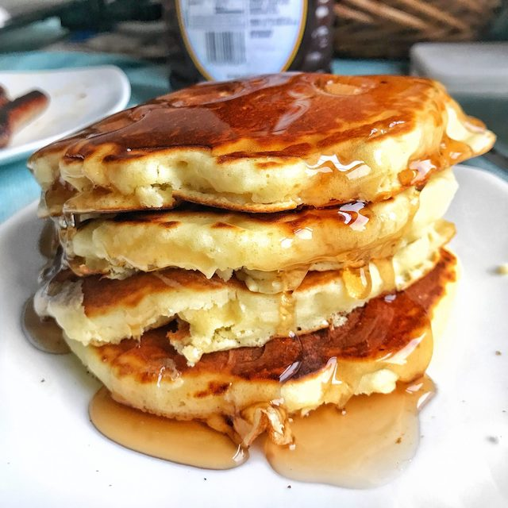

Good Old Fashioned Pancakes

Description
Fluffy pancakes perfect for weekend breakfasts.
Ingredients
- 1 1/2 cups all-purpose flour
- 3 1/2 tsp baking powder
- 1/4 tsp salt
- 1 tbsp white sugar
- 1 1/4 cups milk
- 1 egg
- 3 tbsp butter, melted
Steps
- In a large bowl, sift together the flour, baking powder, salt and sugar. Make a well in the center and pour in the
milk, egg and melted butter. Mix until smooth.
- Heat a lightly oiled griddle or frying pan over medium-high heat. Scoop the batter onto the griddle, approximately
1/4 cup for each pancake. Brown on both sides and serve hot.